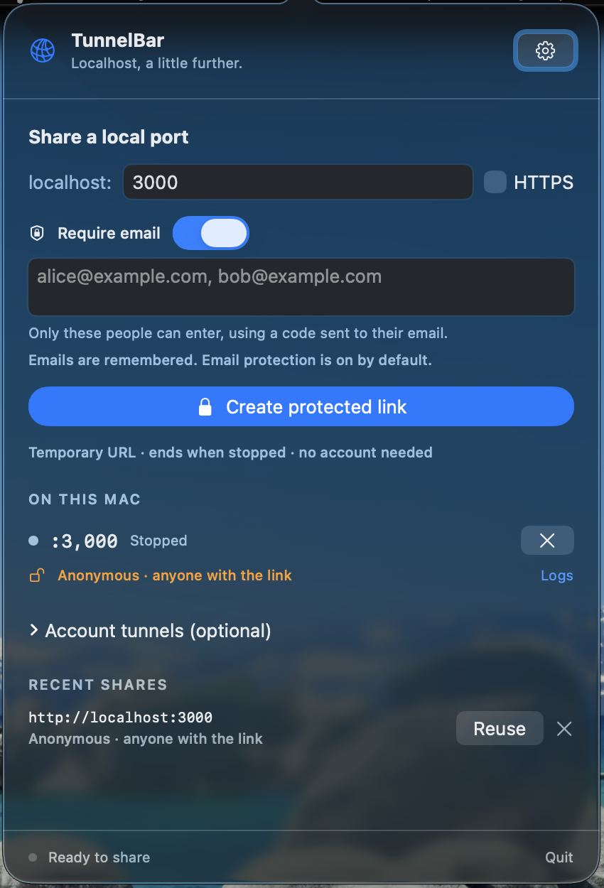

TunnelBar.
Localhost,
a little further.
Share a local port with the people you choose.
An email-protected link, right from your menu bar.
macOS 13+ · Bring your own cloudflared
An independent project. Not affiliated with, sponsored by, or endorsed by Cloudflare.

Your next demo.
Three small steps.
Keep your app running locally.
TunnelBar takes care of the link.
- 01
Pick your port.
Your site on :3000. Your prototype on :8080. Enter the port your local HTTP service is using.
- 02
Choose your people.
Your allowed emails are remembered. Keep the default email gate, or turn it off to let anyone with the link enter without signing in.
- 03
Send the link. That’s it.
Copy your temporary URL. Keep TunnelBar open while sharing, then hit Stop when you’re done.
A good neighbor
in your menu bar.
Feels right at home.
Built with SwiftUI and AppKit. Native controls, no Dock icon, and your tunnels a click away.
Private by invitation.
Email protection is on by default. Choose anonymous access when you want anyone with the link to enter. Quick shares need no account or API token.
A little less repetition.
Your email list stays saved, even after an anonymous share. Reuse recent port settings. View account tunnels, connection status, and logs without juggling terminals.
Localhost is ready
for company.
Development builds for macOS 13 and later. Cloudflared is installed separately.
A work in progress. These are locally signed development builds, not notarized public releases. Browser email delivery is still awaiting full end-to-end verification. The repository and GitHub downloads currently require authorized access.
Before your first share.
Already have cloudflared? You’re most of the way there.
Check your cloudflared.
TunnelBar needs a version with --allowed-mail support. The app checks this when it starts.
cloudflared tunnel --helpHow do I install a downloaded build?
Unzip the archive, move TunnelBar.app to Applications, and open it. Look for the network icon in your menu bar. Install cloudflared separately if you don’t have it yet. These development builds are not notarized; if macOS prevents opening one, you can build from the source instructions instead.
What happens to my link when I stop?
Quick Tunnel URLs are temporary. Stop ends the connector, and restarting creates a new URL. Normal Quit stops shares created by TunnelBar. A bundled guardian also stops the connector if the app crashes or is killed, escalating after three seconds if needed. Killing the guardian itself is outside this protection.
Can I manage my existing named tunnels?
The optional account list uses your existing cloudflared CLI certificate. To connect it, run cloudflared tunnel login in Terminal, authorize a domain, then refresh TunnelBar. The app does not create a separate login session. Routing, Access policies, and starting or stopping named tunnels are managed separately in Cloudflare.
Can I share without email authentication?
Yes. Require email is on by default, and your allowed emails are remembered. Turn the switch off and choose Create anonymous link to allow anyone with the URL to enter without signing in. Anonymous sharing does not erase your saved emails. The form restores email protection after creating a link or reusing a recent share.
What stays on my Mac?
Recent ports and email allowlists are saved locally in macOS UserDefaults. You can clear recent shares in Settings. TunnelBar stores no API tokens and has no app telemetry. Cloudflare handles tunnel traffic and email authentication.
Is this ready for production traffic?
This is early-stage software, and Cloudflare Quick Tunnels are intended for testing and development. Full browser authentication and email-delivery checks remain pending. Use named tunnels and appropriate Access policies for stable production routing.